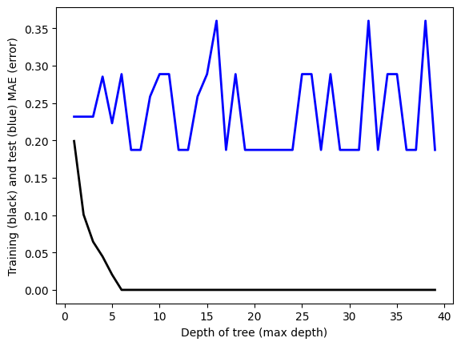

(9, 11)
<bound method NDFrame.head of CountryHappy Score GDP Chart Position \
1 Australia 7.0946 64491.4 198
2 Austria 7.0973 52131.4 84
10 Denmark 7.5864 66983.1 198
11 Egypt 4.1705 4295.4 84
13 Finland 7.8042 50536.6 126
15 Germany 6.8918 48432.5 84
28 Netherlands 7.4030 55985.4 198
29 New Zealand 7.1229 48249.3 198
33 Switzerland 7.2401 92101.5 198
Artist and Title Position Duration Peak (x?) Points \
1 Elton John & Dua Lipa - Cold Heart 787 1 41 1056
2 Travis Scott - MELTDOWN 76 1 3 1860
10 Elton John & Dua Lipa - Cold Heart 787 1 41 1056
11 Travis Scott - MELTDOWN 76 1 3 1860
13 Ed Sheeran - Perfect 1982 1 2 1446
15 Travis Scott - MELTDOWN 76 1 3 1860
28 Elton John & Dua Lipa - Cold Heart 787 1 41 1056
29 Elton John & Dua Lipa - Cold Heart 787 1 41 1056
33 Elton John & Dua Lipa - Cold Heart 787 1 41 1056
Country Country Rank
1 Australia 43.0
2 Austria 153.0
10 Denmark 124.0
11 Egypt 47.0
13 Finland 158.0
15 Germany 170.0
28 Netherlands 99.0
29 New Zealand 49.0
33 Switzerland 122.0 >
C:\Users\Amand\AppData\Local\Temp\ipykernel_19352\3590638393.py:2: SettingWithCopyWarning:
A value is trying to be set on a copy of a slice from a DataFrame.
Try using .loc[row_indexer,col_indexer] = value instead
See the caveats in the documentation: https://pandas.pydata.org/pandas-docs/stable/user_guide/indexing.html#returning-a-view-versus-a-copy
happysongsdf["GDP"] = pd.to_numeric(happysongsdf["GDP"].str.replace(',', ''), errors='coerce')
from sklearn.metrics import mean_absolute_percentage_errorfrom sklearn.metrics import mean_absolute_errorfrom sklearn.tree import DecisionTreeRegressor# HYPER PARAMETER SEARCH FOR OPTIMAL NUMBER OF NEIGHBORS hyper_param=[]train_error=[]test_error=[]# LOOP OVER HYPER-PARAMfor i inrange(1,40):# INITIALIZE MODEL model = DecisionTreeRegressor(max_depth=i)# TRAIN MODEL model.fit(x_train,y_train)# OUTPUT PREDICTIONS FOR TRAINING AND TEST SET yp_train = model.predict(x_train) yp_test = model.predict(x_test)# shift=1+np.min(y_train) #add shift to remove division by zero err1=mean_absolute_error(y_train, yp_train) err2=mean_absolute_error(y_test, yp_test) # err1=100.0*np.mean(np.absolute((yp_train-y_train)/y_train))# err2=100.0*np.mean(np.absolute((yp_test-y_test)/y_test)) hyper_param.append(i) train_error.append(err1) test_error.append(err2)if(i==1or i%10==0):print("hyperparam =",i)print(" train error:",err1)print(" test error:" ,err2)
hyperparam = 1
train error: 0.19910476190476142
test error: 0.23175000000000034
hyperparam = 10
train error: 0.0
test error: 0.28869999999999996
hyperparam = 20
train error: 0.0
test error: 0.18730000000000002
hyperparam = 30
train error: 0.0
test error: 0.18730000000000002
Code
plt.plot(hyper_param,train_error ,linewidth=2, color='k')plt.plot(hyper_param,test_error ,linewidth=2, color='b')plt.xlabel("Depth of tree (max depth)")plt.ylabel("Training (black) and test (blue) MAE (error)")i=1print(hyper_param[i],train_error[i],test_error[i])
2 0.10067999999999991 0.23175000000000034

Code
from sklearn.model_selection import train_test_splitx_train, x_test, y_train, y_test = train_test_split(X, y, test_size=0.3, random_state=0)print("TRAINING SHAPES:",x_train.shape,y_train.shape)print("TEST SHAPES:",x_test.shape,y_test.shape)
TRAINING SHAPES: (6, 7) (6,)
TEST SHAPES: (3, 7) (3,)
Code
# INITIALIZE MODEL model = DecisionTreeRegressor(max_depth=1)model.fit(x_train,y_train) # TRAIN MODEL # OUTPUT PREDICTIONS FOR TRAINING AND TEST SET yp_train = model.predict(x_train)yp_test = model.predict(x_test)err1=mean_absolute_error(y_train, yp_train) err2=mean_absolute_error(y_test, yp_test) print(" train error:",err1)print(" test error:" ,err2)
train error: 0.21123999999999996
test error: 0.217646666666667
My dataset was too small for a supervised learning project to yield an accurate analysis. However, my methodology was to run a regression model, where I combine the datasets for self- reported life satisfaction and apple music rankings and use the life satisfaction as the target variable. The decision tree produced 2 leaves, one with a value of 4.17 and another with a value of 7.287.
Below, I produced a decision tree with some information on the success of the algorithm and a linear regression visualization. As the closer the predicted y and true y is to the line, this visualization shows the fit was not perfect, but luckily the data did not suffer from overfitting.
# LINEAR REGRESSION from sklearn.linear_model import LinearRegressionmodel = LinearRegression().fit(X, y)# OUTPUT PREDICTIONS FOR TRAINING AND TEST SET yp_train = model.predict(x_train)yp_test = model.predict(x_test)plt.plot(y_train,yp_train ,"o", color='k')plt.plot(y_test,yp_test ,"o", color='b')plt.plot(y_train,y_train,"-", color='r')plt.xlabel("y_data")plt.ylabel("y_pred (blue=test)(black=Train)")err1=100.0*np.mean(np.absolute((yp_train-y_train)/y_train))err2=100.0*np.mean(np.absolute((yp_test-y_test)/y_test))print(" train error:",err1)print(" test error:" ,err2)
train error: 5.476143871360148
test error: 5.467027259259829